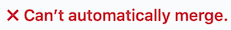
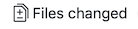

1. A Step By Step Contribution
Note
Though QGIS-Documentation is used to demonstrate the process, all commands and steps shown below also apply to QGIS-Website.
If you are reading these lines, it is certainly because you are willing to contribute to writing QGIS documentation and are looking for a how-to. You have come to the right place! The current document will guide you through the different ways to achieve this objective, showing you the main steps to follow, the tricks you can use and the traps you should be aware of.
For any help, do not hesitate to either ask in a comment on the issue report you are trying to fix or write to the QGIS-community-team list. More details at Get involved in documentation.
Let’s now dive into the process.
Documentation sources are stored using the git version control system and are available on GitHub at https://github.com/qgis/QGIS-Documentation. A list of issues to fix and features to explain can be found at https://github.com/qgis/QGIS-Documentation/issues.
Tip
If you are a first-time contributor and do not know where to start from, you may be interested in tackling our welcoming issue reports.
There are two main ways, not mutually exclusive, to modify the files:
1.1. Using the GitHub web interface
The GitHub web interface allows you to do the following:
edit files
preview and commit your changes
make a pull request to have your changes inserted into the main repository
create, update, or delete branches
If you are not yet familiar with git and GitHub vocabulary, you may want to read the GitHub Hello-world project to learn some basic vocabulary and actions that will be used below.
Note
If you are fixing a reported issue
If you are making changes to fix an issue, add a comment to the issue report to assign it to yourself. This will prevent more than one person from working on the same issue.
1.1.1. Fork QGIS-Documentation
Assuming you already have a GitHub account, you first need to fork the source files of the documentation.
Navigate to the QGIS-Documentation repository page and click on the
 button in the upper right corner.
button in the upper right corner.
In your GitHub account you will find a QGIS-Documentation repository
(https://github.com/<YourName>/QGIS-Documentation).
This repository is a copy of the official QGIS-Documentation repository where
you have full write access and you can make changes without affecting the
official documentation.
1.1.2. Make changes
There are different ways to contribute to QGIS documentation. We show them separately below, but you can switch from one process to the other without any harm.
Alternative 1: Use the Edit on GitHub shortcut
Pages on the QGIS documentation website can be edited quickly and easily by clicking on the
Edit on GitHub link at the top right of each page.
This will open the file in the
qgis:masterbranch with a message at the top of the page telling you that you don’t have write access to this repo and your changes will be applied to a new branch of your repository.Do your changes. Since the documentation is written using the reStructureText syntax, depending on your changes, you may need to rely on the writing guidelines.
When you finish, make a short comment about your changes and click on Propose changes. This will generate a new branch (
patch-xxx) in your repository.After you click on Propose changes, github will navigate to the Comparing changes page.
If you’re done making changes, skip to Compare changes in the Share your changes via Pull Request section below.
If there are additional changes that you want to make before submitting them to QGIS, follow these steps:
Navigate to your fork of QGIS-Documentation (
https://github.com/<YourName>/QGIS-Documentation)Click on
 and search for the
and search for the patch-xxxbranch. Select this patch branch. The button will now say
Branch: patch-xxxJump down to Modify files below.
Note
The Edit on GitHub shortcut is also available in the drop-down
menu at the bottom of the left sidebar.
Alternative 2: Create an ad hoc branch in your documentation repository
You can edit files directly from your fork of the QGIS Documentation.
First, make sure that your master branch is up to date with qgis:master branch.
To do so:
Go to the main page of your repository, i.e.
https://github.com/<YourName>/QGIS-Documentation. Themasterbranch should be active with a mention whether it is up to date withqgis/QGIS-Documentation:masteror not.If it has commits ahead the upstream branch, you better use the previous shortcut button alternative until you align your
masterbranch.If it only has commits behind:
Expand the Fetch Upstream drop-down menu on the right. You can
Compare the branches and see new changes in the main repository
Fetch and merge: takes changes from the upstream branch to yours.
Let’s click Fetch and merge: after the process, your branch is mentioned as up to date with
qgis/QGIS-Documentation:master.
Click on
in the upper left corner of your forked
QGIS-Documentation repository and enter a unique name in the text field to create a
new branch .
The name of the new branch should relate to the problem you intend to fix. The
button should now say Branch: branch_nameYou are ready to start new changes on top of it.
Attention
Do your changes in an ad hoc branch, never in the master branch
By convention, avoid making changes in your master branch except when
you merge the modifications from the master branch of qgis/QGIS-Documentation
into your copy of the QGIS-Documentation repository.
Separate branches allow you to work on multiple problems at the same time
without interfering with other branches. If you make a mistake you can
always delete a branch and start over by creating a new one from the master
branch.
1.1.3. Modify files
Browse the source files of your fork of QGIS-Documentation to the file that needs to be modified
Make your modifications following the writing guidelines
When you finish, navigate to the Commit Changes frame at the bottom of the page, make a short comment about your changes, and click on Commit Changes to commit the changes directly to your branch. Make sure Commit directly to the branch_name branch. is selected.
Repeat the previous steps for any other file that needs to be updated to fix the issue
1.1.4. Share your changes via Pull Request
You need to make a pull request to integrate your changes into the official documentation.
Note
If you used an Edit on GitHub link
After you commit your changes GitHub will automatically open a new page
comparing the changes you made in your patch-xxx branch to the qgis/QGIS-Documentation
master branch.
Skip to Step 2 below.
Start a new pull request
Navigate to the main page of the QGIS-Documentation repository and click on New pull request.
Compare changes
If you see two dialog boxes, one that says base:master and the other
compare:branch_name (see figure), this will only merge your changes from
one of your branches to your master branch. To fix this click on the
compare across forks link.

Fig. 1.1 If your Comparing changes page looks like this, click on the compare across forks link.
You should see four drop-down menus. These will allow you to compare the changes that you have made in your branch with the master branch that you want to merge into. They are:
base fork: the fork that you want to merge your changes into
base: the branch of the base fork that you want to merge your changes into
head fork: the fork that has changes that you want to incorporate into the base fork
compare: the branch with those changes
Select qgis/QGIS-Documentation as the base fork with master as base,
set the head fork to your repository <YourName>/QGIS-Documentation,
and set compare to your modified branch.

Fig. 1.2 Comparing changes between qgis/QGIS-Documentation and your repository
A green check with the words Able to merge shows that your changes can be merged into the official documentation without conflicts.
Click the Create pull request button.
Warning
If you see 
{kind=link}
This means that there are conflicts. The files that you are modifying are not up to date with the branch you are targeting because someone else has made a commit that conflicts with your changes. You can still create the pull request but you’ll need to fix any conflicts to complete the merge.
Tip
Though being translated, the latest version
of QGIS documentation is still maintained and existing issues are fixed. If you are
fixing issues for a different release, change base from master
to the appropriate release_... branch in the steps above.
Describe your pull request
A text box will open: fill in any relevant comments for the issue you are addressing.
If this relates to a particular issue,
add the issue number to your comments. This is done by entering # and the issue
number (e.g. #1234). If preceded by terms like fix or close, the
concerned issue will be closed as soon as the pull request is merged.
Add links to any documentation pages that you are changing.
Click on Create pull request.
Review and comment pull request
As seen above, anyone can submit modifications to the documentation through pull requests. Likewise anyone can review pull requests with questions and comments. Perhaps the writing style doesn’t match the project guidelines, the change is missing some major details or screenshots, or maybe everything looks great and is in order. Reviewing helps to improve the quality of the contribution, both in form and substance.
To review a pull request:
Navigate to the pull requests page and click on the pull request that you want to comment on.
At the bottom of the page you will find a text box where you can leave general comments about the pull request.
To add comments about specific lines,
Click on  and find the file you want to comment on. You may have to click on Display the source diff to see the changes.
Scroll to the line you want to comment on and click on the
 .
That will open a text box allowing you to leave a comment.
.
That will open a text box allowing you to leave a comment.
{kind=link}
Specific line comments can be published either:
as single comments, using the Add single comment button. They are published as you go. Use this only if you have few comments to add or when replying to another comment.
or as part of a review, pressing the Start a review button. Your comments are not automatically sent after validation, allowing you to edit or cancel them afterwards, to add a summary of the main points of the review or global instructions regarding the pull request and whether you approve it or not. This is the convenient way since it’s more flexible and allows you to structure your review, edit the comments, publish when you are ready and send a single notification to the repository followers and not one notification for each comment. Get more details.

Fig. 1.3 Commenting a line with a change suggestion
Line comments can embed suggestions that the pull request writer can apply to the pull request. To add a suggestion, click the Insert a suggestion button on top of the comment text box and modify the text within the suggestion block.
{kind=link}
Tip
Prefer committing suggestions to your pull request as a batch
As a pull request author, when directly incorporating reviewers’ feedback in your pull request, avoid using the Commit suggestion button at the bottom of the comment when you have many suggestions to address and prefer adding them as a batch commit, that is:
Press Add suggestion to batch for each rewording you’d like to include. You will see a counter increasing as you go.
Press any of the Commit suggestions button when you are ready to apply the suggestions to your pull request, and enter a message describing the changes.
This will add all the modifications to your branch as a single commit, resulting in a more legible history of changes and less notifications for the repository followers. Incidentally, proceeding as this will also save you many clicks.
Make corrections
A new pull request will automatically be added to the Pull requests list. Other editors and administrators will review your pull request and they may make suggestions or ask for corrections.
A pull request will also trigger automated build checks (eg, for rst formatting,
python code syntaxes), and reports are displayed at the bottom of the page.
If an error is found, a red cross will appear next to your commit.
Click on the red cross or on Details in the summary section at the bottom
of the pull request page to see the details of the error. You’ll have to fix
any reported errors or warnings before your changes are committed to the
qgis/QGIS-Documentation repository.
You can make modifications to your pull request until it is merged with the main repository, either to improve your request, to address requested modifications, or to fix a build error.
To make changes click on the tab in your pull request page and click the pencil button next to the filename that you want to modify.
{kind=link}
Any additional changes will be automatically added to your pull request if you make those changes to the same branch that you submitted in your pull request. For this reason, you should only make additional changes if those changes relate to the issue that you intend to fix with that pull request.
If you want to fix another issue, create a new branch for those changes and repeat the steps above.
An administrator will merge your contribution after any build errors are corrected, and after you and the administrators are satisfied with your changes.
1.1.5. Delete your merged branch
You can delete the branch after your changes have been merged. Deleting old branches saves you from having unused and outdated branches in your repository.
Navigate to your fork of the QGIS-Documentation repository (
https://github.com/<YourName>/QGIS-Documentation).Click on the Branches tab. Below Your branches you’ll see a list of your branches.
Click on the
 Delete this branch icon to delete any
unwanted branches.
Delete this branch icon to delete any
unwanted branches.
1.2. Using Git command line tools
The GitHub web interface is an easy way to update the QGIS-documentation repo with your contributions, but it doesn’t offer tools to:
group your commits and clean your change history
fix possible conflicts with the main repo
build the documentation to test your changes
You need to install git on your hard drive in order to get access to more advanced and powerful tools and have a local copy of the repository. Some basics you may often need are exposed below. You’ll also find rules to care about even if you opt for the web interface.
In the code samples below, lines beginning with $ show commands you should
type while # are comments.
1.2.1. Local repository
Now you are ready to get a local clone of your QGIS-Documentation repository.
You can clone your QGIS repository using the web URL as follows:
# move to the folder in which you intend to store the local repository
$ cd ~/Documents/Development/QGIS/
$ git clone https://github.com/<YourName>/QGIS-Documentation.git
The former command line is simply an example.
You should adapt both the path and the repository URL, replacing <YourName>
with your github user name.
Check the following:
# Enter the local repository
$ cd ./QGIS-Documentation
$ git remote -v
origin https://github.com/<YourName>/QGIS-Documentation.git (fetch)
origin https://github.com/<YourName>/QGIS-Documentation.git (push)
$ git branch
* master
origin is the name of the remote repository of your QGIS-Documentation repository.
master is the default main branch. You should never use it to contribute! Never!
Alternatively you can clone your QGIS repository using the SSH protocol:
# move to the folder in which you intend to store the local repository
$ cd ~/Documents/Development/QGIS/
$ git clone git@github.com:<YourName>/QGIS-Documentation.git
Tip
Permission denied (publickey) error?
If you get a Permission denied (publickey) error with the former command, there may be a problem with your SSH key. See GitHub help for details.
Check the following if you used the SSH protocol:
# Enter the local repository
$ cd ./QGIS-Documentation
$ git remote -v
origin git@github.com:<YourName>/QGIS-Documentation.git (fetch)
origin git@github.com:<YourName>/QGIS-Documentation.git (push)
$ git branch
* master
You can start to work here but in the long term process you will get a lot of issues when you will push your contribution (called Pull Request in github process) as the master branch of the qgis/QGIS-Documentation repository will diverge from your local/remote repository. You then need to keep track of the main remote repository and work with branches.
1.2.2. Add another remote repository
To be able to follow the work in the main project, add a new remote repository in your local repository. This new remote repository is the QGIS-Documentation repository from QGIS project:
$ git remote add upstream https://github.com/qgis/QGIS-Documentation.git
$ git remote -v
origin https://github.com/<YourName>/QGIS-Documentation.git (fetch)
origin https://github.com/<YourName>/QGIS-Documentation.git (push)
upstream https://github.com/qgis/QGIS-Documentation.git (fetch)
upstream https://github.com/qgis/QGIS-Documentation.git (push)
Similarly, you can use the SSH protocol to add a remote repository in your local repository:
$ git remote add upstream git@github.com:qgis/QGIS-Documentation.git
$ git remote -v
origin git@github.com:<YourName>/QGIS-Documentation.git (fetch)
origin git@github.com:<YourName>/QGIS-Documentation.git (push)
upstream git@github.com:qgis/QGIS-Documentation.git (fetch)
upstream git@github.com:qgis/QGIS-Documentation.git (push)
So now you have the choice between two remote repository:
origin to push your local branch in your remote repository
upstream to merge (if you have right to do so) your contribution to the official one OR to update your master branch of local repository from the master branch of the official repository.
Note
upstream is just a label, a kind of standard name but you can call it as you want.
1.2.3. Update your base branch
Before working on a new contribution, you should always update your master branch in your local repository. Assuming you are willing to push changes to the testing documentation, run the following command lines:
# switch to master branch (it is easy to forget this step!)
$ git checkout master
# get "information" from the master branch in the upstream repository
# (aka qgis/QGIS-Documentation's repository)
$ git fetch upstream master
# merge update from upstream/master to the current local branch
# (which should be master, see step 1)
$ git merge upstream/master
# update **your** remote repository (aka <YourName>/QGIS-Documentation)
$ git push origin master
Now you have your local and remote repositories which both have their master
branch up to date with the official master branch of QGIS-Documentation.
You can start to work on your contribution.
Note
Switch the branch if you wish to contribute to released doc
Along with the testing documentation, we continue to fix issues in the
latest release, meaning
that you can also contribute to it. Follow the previous section sample code,
replacing master with the corresponding branch of the latest documentation.
1.2.4. Contribute to your production branch
Now that your base branch is updated, you need to create a dedicated branch in which you add your contribution. Always work on a branch other than the base branch! Always!
# Create a new branch
$ git checkout -b myNewBranch
# checkout means go to the branch
# and -b flag creates a new branch if needed, based on current branch
# Let's check the list of existing branches (* indicates the current branch)
$ git branch
master
release_2.18
...
* myNewBranch
# You can now add your contribution, by editing the concerned file(s)
# with any application (in this case, vim is used)
$ vim myFile
# once done
$ git add myFile
$ git commit
Few words about commit/push commands:
try to commit only one contribution (atomic change) i.e. address only one issue
try to explain carefully what you change in the title of your commit and in the description. The first line is a title and should start by an upper case letter and have 80 characters length, don’t end with a
.. Be concise. Your description can be longer, end with a.and you can give much more details.use a
#with a number to refer to an issue. Prefix withFixif you fix the ticket: your commit will close the ticket.
Now that your changes are saved and committed in your local branch, you need to send them to your remote repository in order to create pull request:
$ git push origin myNewBranch
1.2.6. Clean-up your local and remote repository
After your PR has been merged into the official QGIS-Documentation, you can delete your branch. If you work a lot this way, in few weeks you will get a lot of unuseful branches. So keep your repository clean this way:
# delete local branch
$ git branch -d myNewBranch
# Remove your remote myNewBranch by pushing nothing to it
$ git push origin :myNewBranch
And do not forget to update the master branch in your local repository!
1.3. Further reading
Other than the Github web interface and the git command line tools exposed above, there are also GUI applications you can use to create and manage your contributions to the documentation.
When the changes in the pull request are conflicting with recent changes pushed to the target branch, the conflicts need to be resolved before a merge is possible:
if the conflict relates to few competing lines, a Resolve conflicts button is available in the GitHub pull request page. Press the button and resolve the issue as explained at Resolving a merge conflict on GitHub
if the conflict involves files renaming or removal, then you’d need to resolve the conflict using git command lines. Typically, you have to first rebase your branch over the target branch using
git rebase targetBranchcall and fix the conflicts that are reported. Read more at Resolving a merge conflict using the command line
Sometimes, at the end of the proofreading process, you may end up with changes split into multiple commits that are not necessarily worth it. Git command lines help you squash these commits to a smaller number and more meaningful commit messages. Some details at Using git rebase on the command line